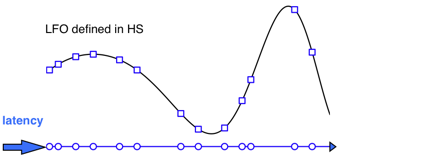
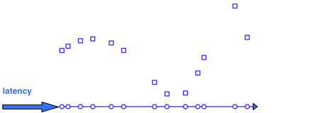
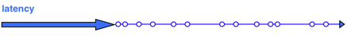

Guide to HS and HSpar Extension
Extension
ExtensionMotivation
Sometimes it may be desirable to use synth values in a Pbind (actually the derived EventStreamPlayer), I'm especially thinking of LFO-like controls for the generated synth(s). There are different ways to do this or something similar, see Event patterns and LFOs for examples.
As a general distinction for an event stream you can have new control values per event (1) or continuous control (2). Some possible implementations:
There also exist elaborated language solutions that can be used in the above sense: see the interpolation methods in Wouter Snoei's wslib quark and (based on that) Splines with gui by crucialfelix.
For (1) and (2) LFO behaviour can be defined using help synths (1c, 1d, 1e, 2a, 2b). If the Pbind-generated synths read values from control buses (1e, 2a, 2b), you don't have these values in the language (well, maybe you don't need them). With (1c) you have to use the internal server (of course this may also be ok). Having to define audio SynthDefs with respect to possible future control needs (1e, 2a) though is a bit unflexible. So (1d) integrates some nice features, nevertheless this has to be traded off with additional latency inherent in its mechanism: by using HS / PHS (and relates) help synth values are sent back to the client via OSCresponders, which works with local and internal server.
The HS / PHS approach would especially be of interest if control behaviour could more easily be defined by server means than in SC lang (e.g. specific and / or nested UGens) but data should also be further manipulated in the language (e.g. for some kind of combinatorial use such as harmonic or polyphonic calculations). As a separate feature HSpar / PHSpar support timed and combinatorial possibilities to refer to more than one control synth (e.g. switching). This type of control, however, would not necessarily have to use the underlying demand-respond implementation.
Working scheme
- Define help synth(s) by HS or HSpar. These objects hold synth definitions, HS holds a single synth definition, HSpar can hold more than one and has additional features.
- Define Pbind(s) by PHS (for HS) or PHSpar (for HSpar) to use synth values.
- Play PHS / PHSpar. This instantiates a PHSplayer / PHSparPlayer object. Synth values are demanded and received for the use in defined Pbinds, HS / HSpar keep track of OSC traffic. PHSplayer / PHSparPlayer can be stopped and started with options, concerning Pbinds and help synths.
Option, may be done immediately with (2) and (3) or later to "step in":
- Define further Pbind(s) by PHSuse / PHSparUse which refer to the same HS / HSpar.
- Play PHSuse / PHSparUse. A PHSusePlayer object is instantiated, which can also be stopped and started with options. Different from PHSplayer / PHSparPlayer these options are only concerning the Pbind(s). Help synth control is defined by PHS / PHSpar or can be done by their players' methods stop and play. Therefore steps (4) and (5) require the preceding definition resp. playing of PHS / PHSpar. Synchronization with other players can be done by the use of Quant objects.
Instead of using PHSuse / PHSparUse objects in order to have separate players it's also possible to define several HS / HSpar objects independently. See PHSparUse for an example.
A VarGui interface may be generated before step (3), see HS with VarGui.
Latency
Due to the mechanism of demanding and receiving a synth value before sending an actual message defined by the event pattern, there is a latency in addition to and independent from normal server latency (actually there are two, called demandLatency and respondLatency). demandLatency is the latency of the help synth(s) in relation to the synth value demands, driven by the Pbind duration pattern, respondLatency means the time given to the response to be received safely on time by the client.
If these additional latencies are too small the communication between client and server may loose track of synth values needed by the event pattern and the mechanism breaks. On the other hand large latencies and heavy OSC traffic could need more CPU for bookkeeping - maybe you have to play around to find right values. Using the default latencies of HS / HSpar (demandLatency = 0.15, respondLatency = 0.15) and the Server (latency = 0.2) there is an overall latency of 0.5 sec (and in most cases you could lower this a lot if you need to). I didn't intend to use the whole thing for live performance, so just be aware.
OSC demand / respond mechanism to use server values in event streams
Suppose HS defined, this happens when PHS is played:
- latency = 0
sequence of duration values generated in language
- latency = demandLatency
(timing accuracy depends on defined time granulation) in server: synth started, values taken at scheduled times
 - latency = demandLatency + respondLatency
back in language, synth values can be used e.g. to generate control data for an instrument
 - latency = demandLatency + respondLatency + server latency
if note event: (audio) synth started

Relation to Pbinds and EventStreamPlayers
PHS / PHSpar are almost "like" Pbind objects in the way, that event stream behaviour is defined. Internally two event patterns are defined, one for demand time and one for receive time. Consequently PHSplayer / PHSparPlayer also consist of more than one EventStreamPlayer (PHSparPlayer contains a third one for switching between help synths). This splitting seemed necessary for stopping and resuming Pbind(s) and help synth(s).
You can easily sync PHSplayers / PHSparPlayers / PHSusePlayers themselves or with other EventStreamPlayers via Quant objects. The corresponding play methods take into account the needed time (caused by latency) to step into the quantization as early as possible.
Granularity - internal quantization
If several Pbinds are played in parallel, demands for values of the same help synth can be very close together, which causes possibly unnecessary OSC traffic: If accuracy of synth values is not very important (and for LFO-like purposes it is probably not) it seems sufficient to identify synth values from a small time region. This is done by the HS / HSpar parameter granularity, which defaults to 200, defining a time region of 0.005 seconds. Synth value demands within such a region are using just one (namely the first) demanded value, scheduling itself isn't affected. Mostly you won't have to think about this quantization - note that it has nothing to do with Quant objects and synchronizing players.
Synth value access
In the case of a single help synth (HS), values are accessible within the PHS / PHSuse by the local variable ~val, e.g. by Pkey(\val) or a construction with Pfunc. In the case of several help synths (HSpar), there is the option of defining a separately timed pattern to switch between playing help synths, always marking one as "current". Then ~val refers to this current help synth, but reference behaviour can be differentiated by options and other keywords within the PHSpar / PHSparUse to get values of all playing help synths and other values (indices) which may be useful for control definitions. See examples in the help file PHSpar, e.g. the last one.
Order of execution
If more than one Pbind is defined via PHS / PHSuse / PHSpar / PHSparUse the corresponding players will be started in order of definition with a small amount of time-shift between them, so that they can refer to each other (especially at coinciding points of logical time). See the last example of PHS.
About the examples
Examples in the doc files use help synths values mainly for pitch - this seemes to make the concept quite clear. I preferred to take the default instrument to emphasize what is happening structurally. See HS examples for other usages.
Be sure to have the right HS / HSpar definition evaluated before defining resp. playing a PHS / PHSpar ! - examples usually begin with a HS / HSpar definition and are thought to be worked through following the comments.
link::Guides/Guide_to_HS_and_HSpar::